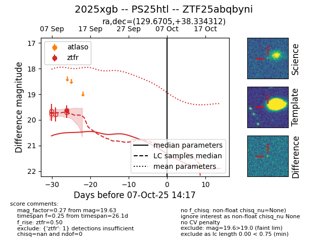
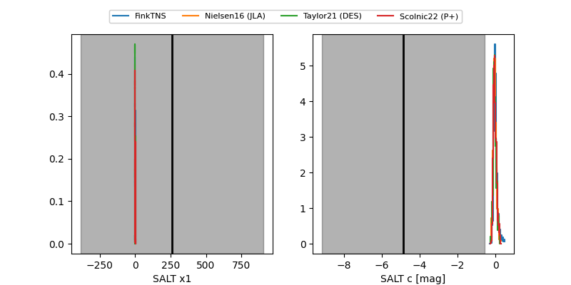

FINK: ZTF25abqbyni
Lasair: ZTF25abqbyni
ALeRCE: ZTF25abqbyni
TNS: 2025xgb
YSE: 2025xgb
ZTF25abqbyni (ztf,fink)
2025xgb (tns,yse)
PS25htl (panstarrs)
equatorial (ra, dec) = (129.6705,+38.33431)
galactic (l, b) = (183.7679,+36.70581)


last ztfr=19.63
1 ztfr detections